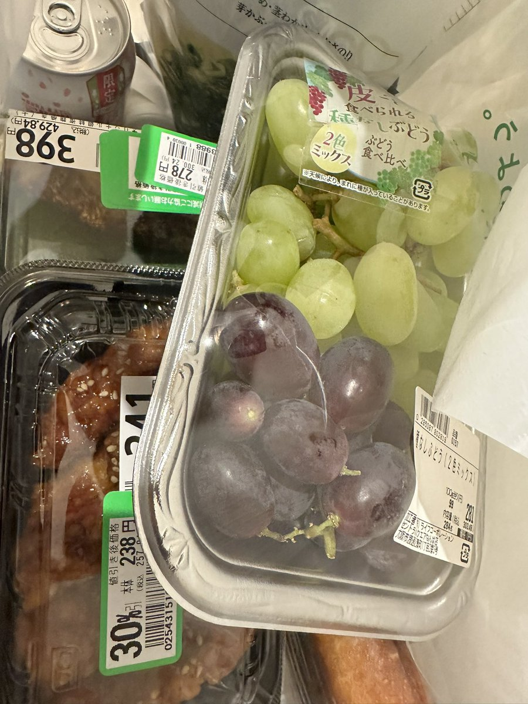

这些价格都来自Life超市，一个中等水平的超市。
国内伊藤洋华堂跟这个水平差不多。
不是什么高端超市也不是什么低端超市
所以请不要再拿老鼠爬过，厨师掉头发抠鼻屎造出来的泔水饭来比，有些东西只是你看得见的部分是一样的，你见过那些店就不可能下得去嘴。
也不要说这些东西在日本算很低端，就只能跟中国最底端的比，因为中国最低端的，是连食品安全都能有问题的东西。这个中端水平的，放在国内都是洋华堂水平了，比盒马还高点。如果觉得这个都算低端，平时真非成城石井不逛，那你在国内该对比的是ole。
国内伊藤洋华堂跟这个水平差不多。
不是什么高端超市也不是什么低端超市
所以请不要再拿老鼠爬过，厨师掉头发抠鼻屎造出来的泔水饭来比，有些东西只是你看得见的部分是一样的，你见过那些店就不可能下得去嘴。
也不要说这些东西在日本算很低端，就只能跟中国最底端的比，因为中国最低端的，是连食品安全都能有问题的东西。这个中端水平的，放在国内都是洋华堂水平了，比盒马还高点。如果觉得这个都算低端，平时真非成城石井不逛，那你在国内该对比的是ole。
